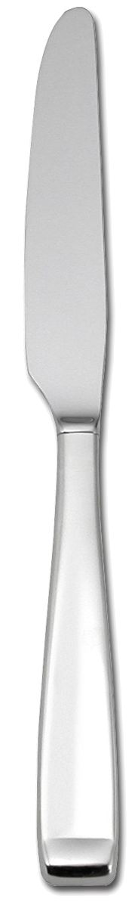
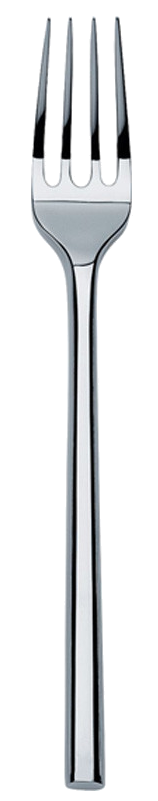

---
---
<!DOCTYPE html>
<html lang="en">

    <head>
        
        <title>Work in Progress</title>
        {% include scripts.html %}
        <meta name="viewport" content="width = 1050, user-scalable = no" />

        <!-- turn.js files -->
        <!--<link type="text/css" rel="stylesheet" href="../css/bootstrap.min.css"></link>-->
        <link type="text/css" rel="stylesheet" href="../css/hc.css"></link>
        <link type="text/css" rel="stylesheet" href="../css/magazine.css"></link>


    </head>


    <body>
        <div class="magazine-viewport">
            <div class="container">
                <div class="magazine">
                    {{ content }}
                </div>
            </div>
            <div style="float:right; position:relative; left:-100px; top:50px; border:none;" class="tileRight">
                 
            </div>
            <div style="float:left; position:relative; left:100px; top:50px; border:none;" class="tileLeft">
                 
            </div>
        </div>

        <script type="text/javascript">
function loadApp() {
    $('#all').fadeIn(1000);

    $('.magazine').turn({

        width: 1022,
        height: 700,

        elevation: 50,

        acceleration: !isChrome(),

        gradients: true,

        autoCenter: true,

        pages: 4,

        when: {

            turning: function (event, page, view) {

                var book = $(this),
                currentPage = book.turn('page'),
                pages = book.turn('pages');
                console.log('page is '+currentPage);
                console.log('pages is '+pages);

                // Update the current URI
                /*Hash.go('page/' + page).update();*/


                // Show and hide navigation buttons
                disableControls(page);
            },

            turned: function (event, page, view) {

                disableControls(page);

                $(this).turn('center');

                if (page == 1) {
                    $(this).turn('peel', 'br');
                }

            },

            missing: function (event, pages) {

                for (var i = 0; i < pages.length; i++)
                    addPage(pages[i], $(this));

            }
        }

    });

    $(document).keydown(function (e) {

        var previous = 37,
        next = 39,
        esc = 27;

        switch (e.keyCode) {
            case previous:

                $('.magazine').turn('previous');
                e.preventDefault();

                break;
            case next:

                $('.magazine').turn('next');
                e.preventDefault();

                break;
            case esc:
                break;
        }
    });

    $(window).resize(function () {
        resizeViewport();
    }).bind('orientationchange', function () {
        resizeViewport();
    });

    resizeViewport();
    $('.magazine').addClass('animated');
}


$('#all').hide();


// Load the HTML4 version if theres not CSS transform

yepnope({
    test: Modernizr.csstransforms,
    yep: ['http://www.turnjs.com/lib/turn.min.js'],
    nope: ['http://www.turnjs.com/lib/turn.html4.min.js'],
    both: ['http://www.turnjs.com/lib/zoom.min.js'],
    complete: loadApp
});
        </script>

        <script type="text/javascript">
SimpleJekyllSearch({
    searchInput: document.getElementById('search-input'),
    resultsContainer: document.getElementById('results-container'),
    json: '{{ site.baseurl }}/searchEng.json',
    searchResultTemplate: '<li><a href="{url}" title="{desc}">{title}</a></li>',
    noResultsText: 'No results found',
    limit: 10,
    fuzzy: false,
    exclude: ['Welcome']
})
        </script>


</html>
